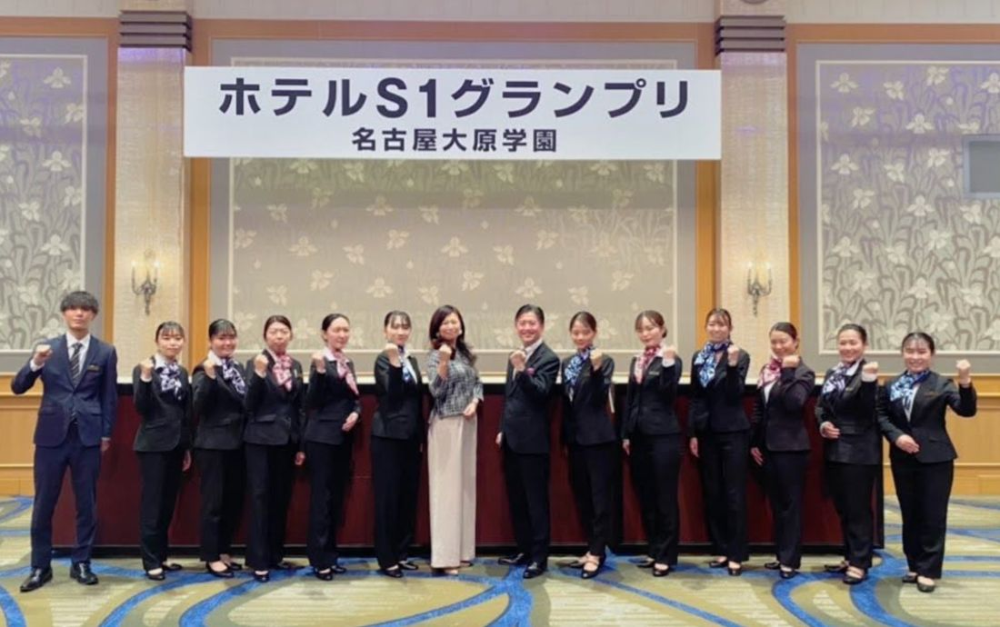
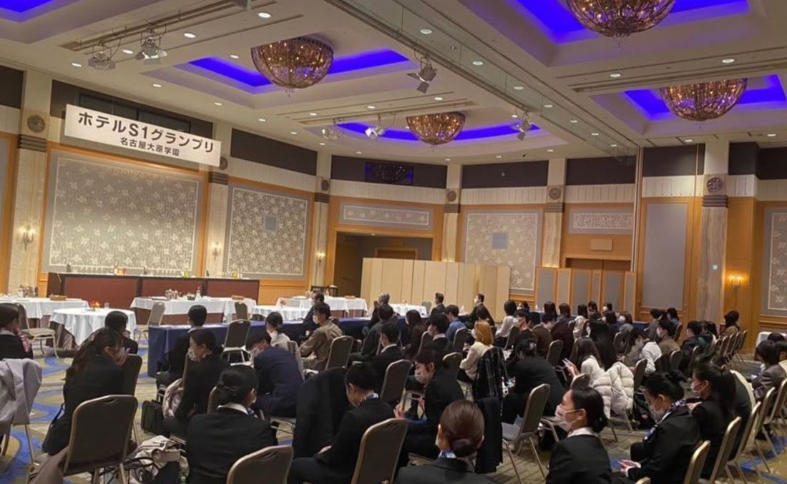

カレッジ部会の11月報告、第2弾です。今回は、名古屋大原学園で開催された「ホテルS1グランプリ」。当協議会の代表理事が、審査委員長としてご招待いただきました。


日常の授業とは違う、張り詰めた緊張感。会場に足を踏み入れた瞬間から、いつもの実習とは空気がまるで違ったそうです。「審査される」という舞台に立つことは、それだけで学生を一段成長させます。
今回競われたのは、次の3部門です。
それぞれの部門で、学生たちが日頃学び、身につけた技術を競いました。
最終審査に進んだ学生の皆さんには、きっと忘れられない経験と、自信となったことでしょう。
大勢の視線の前で、練習してきたことを出しきる。うまくいっても、思うようにいかなくても、あの舞台に立ったという事実は、これから現場に出たときに必ず支えになります。
そして、その姿を真剣な眼差しで見守るクラスメイトや高校生にも、何か感じるものがあったと思います。
先輩たちの本気を間近で見ることは、それ自体が学びです。「自分もあの舞台に立ちたい」「あんなふうになりたい」——そんな気持ちの芽が、見ている側にも生まれたのではないでしょうか。
各部門のグランプリに輝かれた皆さん。本当におめでとうございます！
そして、惜しくも入賞に届かなかった皆さんも、この日に向けて重ねてきた努力は、決して無駄になりません。ステージに立ったすべての学生さんに、心から拍手を送ります。
愛知ウェディング協議会 カレッジ部会では、学校との連携・学生の参画を通じて、業界の未来を担う人材とともに歩んでいく取り組みを進めています。